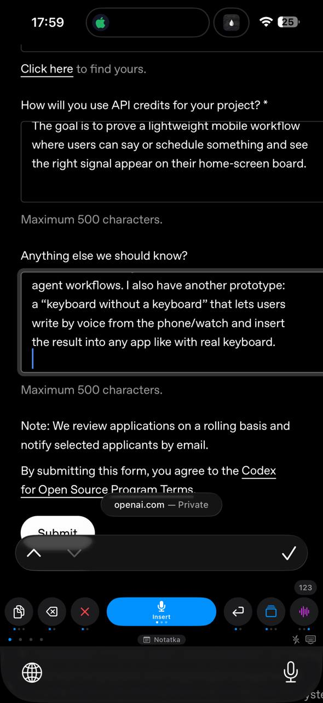

The keyboard without a keyboard.
SpeakPaste turns any text field into an AI command surface: dictate, clean up, rewrite, voice-edit, paste snippets, and run text combos without relying on a full QWERTY keyboard.

Mobile text input is still optimized for typing, not thought.
Standard dictation transcribes. SpeakPaste turns speech into usable output: cleaned text, edits, snippets, command combos, and recoverable history inside the current app.
The bottleneck is intent capture.
On iPhone, the hard part is getting your idea into the active text field quickly without opening another chat app or breaking flow.
A command layer, not QWERTY.
One central microphone, AI cleanup, voice edits, snippets, combos, and fallback history — all from a minimal keyboard.
Reference code for hard edges.
The project documents real iOS extension constraints, speech/LLM workflows, extension IPC, privacy boundaries, and recovery paths.
The hard part is not the prompt. It is the iOS extension architecture.
Keyboard extensions cannot access the microphone directly, so the app and extension coordinate through a careful cross-process flow.
Request
The keyboard asks the container app to record audio through App Group state and Darwin notifications.
Record
The app records with background audio permissions and writes recoverable state.
Transform
Speech is transcribed, optionally cleaned with an LLM, and prepared for insertion.
Recover
If insertion fails or iOS kills the extension, content falls back to clipboard/history.
Why Codex fits.
SpeakPaste is small enough to understand, but complex enough to benefit from serious maintainer automation.
Refactor fragile flows safely.
- keyboard state machine
- extension/app IPC
- fallback behavior
- release workflows
Tests where regressions hurt.
- prompt regression suite
- speech/LLM edge fixtures
- provider adapters
- keyboard flow checks
Privacy-first mobile AI.
- provider abstraction
- logging boundaries
- secret handling
- safe defaults for contributors
Short form answers.
Concise copy for the Codex for Open Source application.
Why does this repository qualify? 333 chars
SpeakPaste is an open-source iOS/iPadOS reference implementation for an AI-first “keyboard without a keyboard”: speech input, LLM cleanup, voice editing, snippets, combos, and resilient extension/app IPC. It addresses a poorly documented ecosystem gap: building production-grade AI workflows inside Apple custom keyboard constraints.
How will you use API credits? 303 chars
I will use API credits to add OpenAI provider support, run prompt regression tests, generate speech/LLM edge-case fixtures, and improve maintainer automation: Codex-assisted PR review, refactoring, documentation, security checks, and release workflows around the fragile keyboard-extension architecture.
Anything else we should know? 384 chars
I am a managing partner at websensa.com and use coding agents in real work, especially Claude Code. I bought Codex for travel and want to evaluate it seriously for OSS maintenance. SpeakPaste is practical mobile AI infrastructure: a minimal command keyboard, not another chat UI. The hardest work is reliability, privacy, extension IPC, fallback behavior, and maintainable docs/tests.
SpeakPaste is a practical experiment in replacing the mobile keyboard with an AI command surface.
Real iOS extension constraints. Real speech/LLM workflows. Real OSS maintainer work.